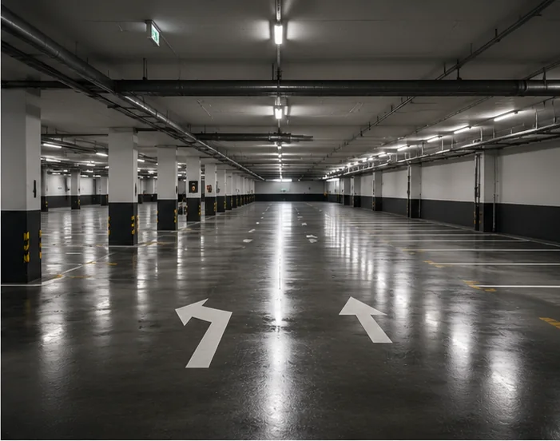
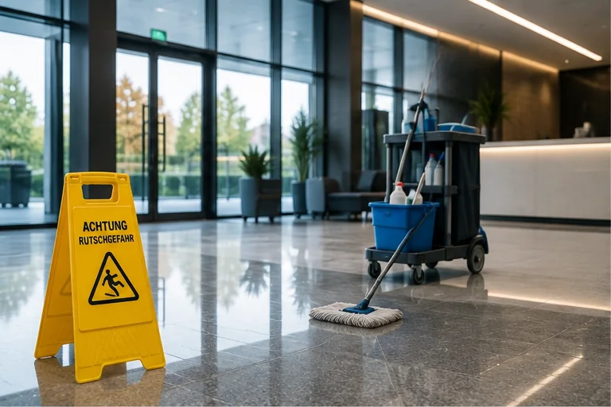
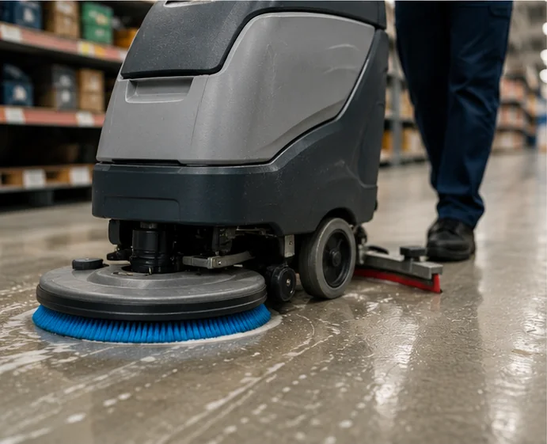

Einsatzbereiche
Vom Empfang bis zur Tiefgarage.
Große Flächen reinigen wir mit Scheuersaugmaschinen – schnell, gleichmäßig und sofort begehbar. Empfindliche Beläge bekommen das passende schonende Verfahren.




Vorher / Nachher
Auch Teppichböden haben eine zweite Chance.
Laufstraßen, Flecken und eingetretener Schmutz: Die Grundreinigung holt aus Teppichböden heraus, was tägliches Saugen nicht mehr schafft.
Verfahren
Grundreinigung oder Unterhaltspflege?
Die Grundreinigung ist der Neustart: Alte Pflegefilme, eingetretener Schmutz und Verfärbungen werden maschinell gelöst und abgesaugt. Sinnvoll bei Übernahme eines Objekts, nach Bauarbeiten oder wenn ein Boden über Jahre nur oberflächlich gewischt wurde.
Die Unterhaltsreinigung hält das Niveau danach: im festen Rhythmus, mit auf den Belag abgestimmten Mitteln. So bleibt der Eindruck konstant – und der Belag hält spürbar länger.
- Beton, Estrich, Feinsteinzeug, Naturstein, PVC, Linoleum
- Teppich-Grundreinigung im Sprühextraktionsverfahren
- Maschinenpark für kleine und große Flächen
Planbar statt Bauchgefühl.
Für Verwaltungen und Betriebe legen wir Reinigungsintervalle schriftlich fest: welche Flächen, welcher Rhythmus, welches Ergebnis. Sie wissen jederzeit, was gemacht wurde – und was der nächste Termin bringt.
Mehr zur laufenden BetreuungGut zu wissen
Warum Böden „vergrauen“ – und was dagegen hilft.
Viele Hartböden wirken nach Jahren stumpf, obwohl sie regelmäßig gewischt werden. Der Grund: Beim Wischen mit falscher Dosierung bauen sich Pflegefilm-Schichten auf, in denen sich Schmutz einlagert. Irgendwann wischt man nur noch die oberste Schmutzschicht – der Grauschleier bleibt.
Die maschinelle Grundreinigung löst diese Schichten mit rotierenden Bürsten und passender Chemie vollständig an und saugt sie samt Schmutzwasser ab. Danach ist der Belag wieder im Originalzustand – und mit der richtigen Erstpflege bleibt er es deutlich länger.
Wann sich welche Reinigung lohnt:
- Unterhaltsreinigung: laufend, hält Optik und Hygiene auf Niveau
- Zwischenreinigung: bei Laufstraßen und erster Vergrauung
- Grundreinigung: bei Übernahme, nach Umbau oder alle paar Jahre
- Teppich-Sprühextraktion: wenn Flecken und Gerüche sich festgesetzt haben
Für Tiefgaragen gilt: mindestens eine Reinigung pro Jahr entfernt Streusalz-Rückstände, die Beton und Beschichtung dauerhaft angreifen.
Häufige Fragen
Fragen zur Bodenreinigung.
Wie lange ist der Boden nach der Reinigung gesperrt?
Hartböden sind nach der maschinellen Reinigung praktisch sofort begehbar, da die Maschine das Schmutzwasser direkt absaugt. Teppichböden brauchen nach der Sprühextraktion einige Stunden zum Trocknen – wir planen den Termin so, dass es Ihren Betrieb nicht stört.
Reinigen Sie auch Tiefgaragen mit laufendem Betrieb?
Ja. Wir arbeiten abschnittsweise und stimmen Sperrzeiten mit der Verwaltung ab, sodass immer ein Teil der Stellplätze nutzbar bleibt.
Lohnt sich eine Grundreinigung, bevor man einen Belag austauscht?
Oft ja. Viele Böden, die „durch“ wirken, sind nur stark verschmutzt oder von alten Pflegeschichten vergraut. Eine Grundreinigung kostet einen Bruchteil des Austauschs – wir sagen Ihnen ehrlich, ob sich das bei Ihrem Belag noch lohnt.
Passt dazu
Häufig zusammen beauftragt.
Welcher Boden macht Ihnen Arbeit?
Beschreiben Sie uns Fläche und Belag – wir empfehlen das passende Verfahren und nennen Ihnen einen klaren Preis.